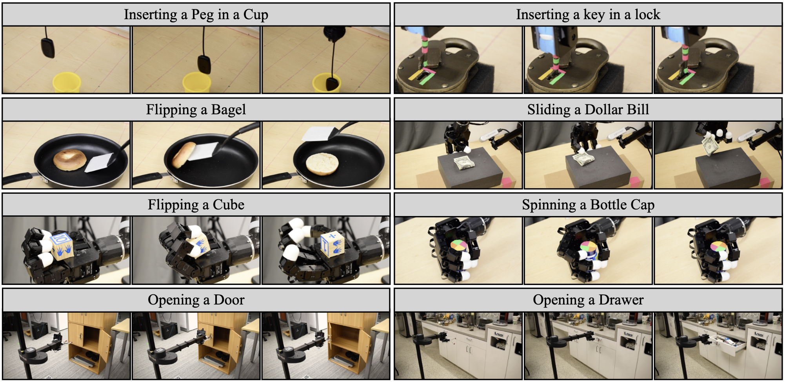
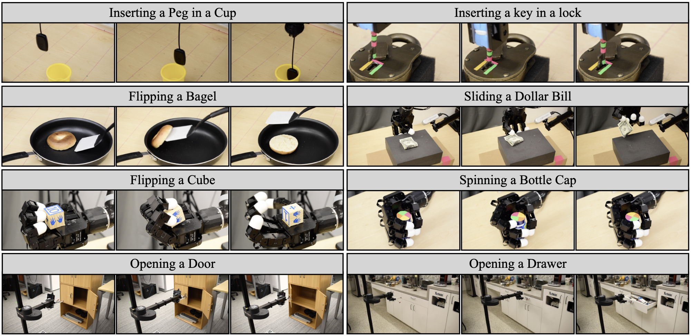

Abstract
While imitation learning provides us with an efficient toolkit to train robots, learning skills that are robust to
environment variations remains a significant challenge. Current approaches address this challenge by relying either
on large amounts of demonstrations that span environment variations or on handcrafted reward functions that require state estimates.
Both directions are not scalable to fast imitation. In this work, we present Fast Imitation of Skills from Humans (FISH), a
new imitation learning approach that can learn robust visual skills with less than a minute of human demonstrations. Given a
weak base-policy trained by offline imitation of demonstrations, FISH computes rewards that correspond to the “match” between
the robot’s behavior and the demonstrations. These rewards are then used to adaptively update a residual policy that adds
on to the base-policy. Across all tasks, FISH requires at most twenty minutes of interactive learning to imitate demonstrations
on object configurations that were not seen in the demonstrations. Importantly, FISH is constructed to be versatile, which allows it
to be used across robot morphologies (e.g. xArm, Allegro, Stretch) and camera configurations (e.g. third-person, eye-in-hand). Our
experimental evaluations on 9 different tasks show that FISH achieves an average success rate of 93%, which is around 3.8× higher
than prior state-of-the-art methods.
 
